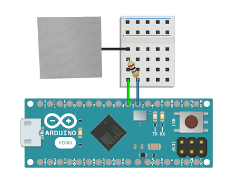

Detect human presence, touch, and pickup events.
See Example Public Methods Release NotesDetect and interact with humans through change in capacitance. You can calibrate this library for your sensor very quickly to detect onNear(), onTouch(), and onPickup() events. The example below uses a piece of aluminum foil, but you can attach the wire to anything conductive and calibrate the sensor accordingly.
This library measures relative capacitance so it is prone to interference. You can temporarily adjust the entire scale and then reset it when the capacitance disruption has stopped by using setModifier() and resetModifier(). Look at the Capacitance Library if you would like to know more about how capacitance is calculated.

Follow these steps to calibrate each human sensor before use:
You must continuously call update() inside of loop() in order to use theReal-Time methods tagged below.

Pass in integers for the send and receive pins to create a new instance of this class.
Pass in an integer to change the number of readings taken to calculate the moving average getRawValue(). This can be called inside of setup() or also safely at runtime inside of loop().
Provide an integer from getRawValue() to calibrate the lowest threshold for when a person is near the sensor.
Provide an integer from getRawValue() to calibrate the lowest threshold for when a person is touching the sensor.
Provide an integer from getRawValue() to calibrate the lowest threshold for when a person is picking up the sensor.
Keep processing the readings and move this library along in real-time.
Returns true if no human is present and the sensor is reading a value below the setNearValue(). This will always return true if no thresholds (near, touch, pickup) are set.
Returns true if a human is present and the sensor is reading a value at or above the setNearValue().
Returns false if the sensor is reading a value below the setNearValue(), or if a setTouchValue() has been assigned and the sensor is reading a value at or above the isTouch() value.
Returns true if a human is touching the sensor and it is reading a value at or above the setTouchValue().
Returns false if the sensor is reading a value below the setTouchValue(), or if a setPickupValue() has been assigned and the sensor is reading a value at or above the isPickup() value.
Returns true if a human is picking up the sensor and it is reading a value at or above the setPickupValue().
Returns false if the sensor is reading a value below the setPickupValue().
This method will return true once the sensor registers a value below the setNearValue(). The active level must change away from and then come back to isGone() in order for this method to return true again.
This method will return true once the sensor registers a value at or above the setNearValue() and below the setTouchValue(). The active level must change away from and then come back to isNear() in order for this method to return true again.
This method will return true once the sensor registers a value at or above the setTouchValue() and below the setPickupValue(). The active level must change away from and then come back to isTouch() in order for this method to return true again.
This method will return true once the sensor registers a value at or above the setPickupValue(). The active level must change away from and then come back to isPickup() in order for this method to return true again.
Returns the capacitance sensor reading after being adjusted with the value given to setModifier().
This will return the raw capacitance sensor reading if you have not used setModifier() yet, or if you have called resetModifier().
Returns the raw capacitance sensor reading and ignores any value that has been passed to setModifier().
Returns the current sensor level after being adjusted by setModifier().
This method will return true once the getValue() changes.
This method will return true once the getRawValue() changes.
This method will return true once the getActiveLevel() changes.
Provide a positive or negative integer to temporarily adjust the human sensor threshold scale. The default value is 0.
For example; if you have calibrated the scale and turn on a motor near the sensor: all readings will need to be adjusted for the increased capacitance from the motor.
Changes the setModifier() back to 0 and resets calibration of the human sensor threshold scale.
For example; if you have calibrated the scale and turn on a motor near the sensor: all readings will need to be adjusted for the increased capacitance from the motor.
Check your downloads folder and double-click the  HumanSensor.zip file.
HumanSensor.zip file.
Move the un-zipped contents of the HumanSensor folder to the Arduino libraries folder:


Upgrade to Arduino IDE v1.5 or greater and load the Example Sketch to get started.